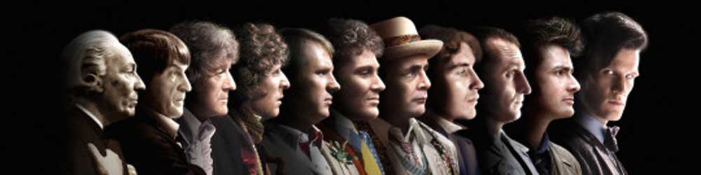
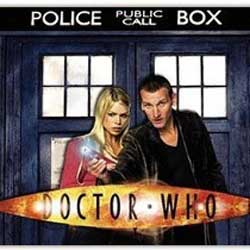

|  |
| Home | The Doctors | The Companions | The Villians | Show History |
2005 RevivalPaul McGann starred in the only television film as the eighth incarnation of the Doctor. After the film, he continued the role in audio books and was confirmed as the eighth incarnation through flashback footage and a mini episode in the 2005 revival, effectively linking the two series and the television movie. In 2011, David Yates announced that he had started work with the BBC on a Doctor Who film, a project that would take three or more years to complete. Yates indicated that the film would take a different approach to Doctor Who,[132] although the current Doctor Who showrunner Steven Moffat stated later that any such film would not be a reboot of the series and a film should be made by the BBC team and star the current TV Doctor. |
Brendan Davey Monica DuCong'e Erik Eyler Kayleen Garcia Katie Hyche Ryan Moeller |
Christine O'Brien Alex Recinos Julia Schwartz Madeleine Schwartz Ann Marie Skjold Ashly Wilkins |
[References] |